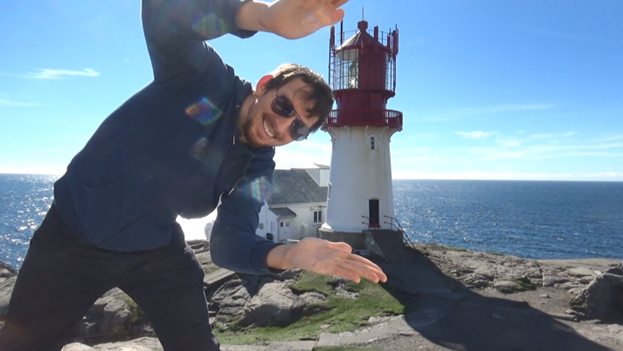

Min praksis hos Shores of Lindesnes
Andreas Lauvhjell, 30 år.
Viktor Hokland, 23 år.
Hva vi jobber med
Vi er akkurat ferdige med å levere film og lydfiler ment for bruk på AirBnB Online Experience og Spotify. Nå holder vi på med å designe nettside som i første omgang skal bli brukt i lag med QR-koder som vil bli festet på ulike punkter av interesse ved Lindesnes fyr, slik at besøkende kan enkelt skaffe seg utdypende informasjon. Denne nettsiden vil samtidig fungere som et knutepunkt til de andre prosjektene som Airbnb Online Experience og Sounds of Lindesnes. QR-koden vil kunne bidra til å øke trafikken på nettsiden, og dermed spre bevissthet om Shores of Lindesnes og deres tilbud knyttet til fyret, historien og senere regionen som en helhet.
Relevant kunnskap brukt fra studiet
Til nå har vi fått veldig god uttelling på HTML/CSS-erfaringene vi fikk i IS-202 da vi designet nettside for AMV (Andersen Mek. Verksted). Vi har også fått bruk for IS-104 Digital Interaksjonsdesign, IS-112 Tjenestedesign og Forretningsmodeller og IS-114 Samskaping – kommunikasjon og prosjektarbeid.
Nåværende semester så har absolutt PHP-faget hjulpet oss mye. Siden begge har det, har vi kommet til enighet om at det er PHP vi skal bruke på back-end istedenfor Java som vi brukte på AMV-prosjektet. Alt i alt synes begge at PHP er et langt mer hendig programmeringsspråk for nettsider enn det Java er.
Det mest interessante med praksisen
Fyrets historie er jo spennende i seg selv å lære om. Det er jo en del av historien som har blitt glemt med tanke på hvor viktig det var for Norge som sjøfartsnasjon. Vi har jo absorbert mye av historien rundt fyret ved å være i praksis. Vi liker begge to best å drive med webutviklinga. Det er det begge to har størst interesse for å gjøre, både nå og i framtidig jobb.
Utover det rent faglige, har det vært interessant å møte diverse aktører som sitter med mye kunnskap rundt det vi skal videreformidle gjennom vårt digitaliserings-arbeid. Dette har gitt oss synsvinkler som har vært med på å forme vårt arbeid, samt gjøre enkelte arbeidsdager mer interessante.
Det gøyeste med praksisen
Prosjektleder har gitt oss stor innflytelse på prosjektet, noe som har gjort det mulig å bestemme noe arbeidsform selv. Dette har ført til en ide om utviklingen av et nettsted til prosjektet. Denne prosessen er arbeid vi synes er veldig givende og kan være relevant for videre karriere innen fagfeltet. I tillegg til dette har vi gjennom Airbnb Online Experience prosjektet, fått reise til Lindesnes fyr ved flere anledninger, og truffet ulike aktører. Dette har vært utrolig spennende og givende for oss i en ellers veldig digital studiehverdag. Her har vi fått utfordre oss på en litt mere kreativ måte, og fått innblandet arbeid knyttet til multimedia, sammen med arbeid rundt utvikling og informasjonssystemer.
